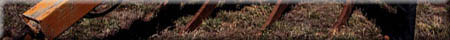
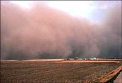

|
|

|
| In Saskatchewan, no one will ever forget the disastrous events of the dirty thirties
when farms literally blew away and the livelihood of thousands of people was ruined.
Soil erosion is without doubt the single most destructive phenomenon in the world.
Whole civilizations have been washed away with their soils. Unfortunately the removal
of topsoil is only part of the story. The small soil particles find their way into streams,
rivers and lakes. Here the fine particles clog the waterways. Sunlight is absorbed by the
particles which raise the temperature of the water temperature so changing the entire ecosystem.
Pesticide pollutants and excess nutrients are also carried along with the particles contaminating
every part of our environment. The social and environmental cost is incalculable and we never
figure out the true cost of deforestation, intensive cultivation and city building until it is
too late to do anything about it. How bad is soil erosion in different countries? The following
table is abstracted from a report published by the Worldwatch Institute by Brown and Wolf in
19841 |
||||||||||||||||||||||||||||
| ||||||||||||||||||||||||||||
Throughout the world 18.4 tonnes/ha (8.2 tons/ac.) of topsoil are lost on average every year. The U.S.D.A. uses the concept of T values or tolerance factors. A T-value of 5-11 Mg/ha (2-5 tons/ac.) is considered to be the erosion limit for long term sustainability. Almost all countries in the table exceed this value. On the southern prairies erosion rates as high as 50 tons/ac per year are not uncommon! | ||||||||||||||||||||||||||||
Water Erosion The single most important factor that affects water erosion is plant cover. Recently broken land, where trees and plants are scraped off the surface, is a prime candidate as are clear cut forests and summerfallowed fields. Water impacting the soil via heavy rains, as well as spring run-off, make water erosion a chronic problem in some areas of the province. Steeply sloped land, long slopes and intermittent water courses across fields are the main sites where water erosion develops. The water, along with wind, removes the topsoil, leaving a thin layer of poor quality subsoil. Cultivation of sloped areas loosens the soil and allows it to flow down the slope forming rills (tiny channels several centimetres deep in the soil)and eventually, gulleys (deep-cut channels which can be measured in metres). This problem is accentuated by farmers pulling their plows down the length of the slope instead of along contours where possible. Gravity helps to add to the effects of water erosion. In flatter areas, especially along rivers, sheet erosion is common. During spring runoff, water may cover large areas of relatively flat land. Matter from the upper soil layers is dissolved in the water and carried away when the land finally drains. Management of water erosion may include any of the following methods:
| ||||||||||||||||||||||||||||
 Wind Erosion Saskatchewan soils most at risk from wind erosion are the Brown soils of southwestern Saskatchewan. Brown soils are light-coloured soils with low organic content that develop in semi-arid grasslands. Growing conditions improve toward the northern and eastern areas of Saskatchewan. The organic content of the soil rises and the colour of the soil becomes ark brown, then black see soil zones. High winds coupled with high temperatures in southwestern Saskatchewan increase evaporation rates in that area. Lack of moisture inhibits plant growth and decreases the rate of decomposition of organic material. The sparse plant growth results in a frail protective cover and leaves the areas vulnerable to problems caused by overgrazing, drought, and cultivation. The tremendous losses of topsoil to winds was evident in the 1930's and can still be seen in some area of the province today. Dry, windy conditions are common to many areas during spring seeding.
How powerful is wind erosion? Experiments in Lethbridge Alberta2 measured the
soil loss due to wind in a single event of several hours:
Losing topsoil has a direct effect on the productivity of the land. A loss of 2.5 cm of soil can reduce wheat yields by 5-10% while a loss of 20 cm can reduce yields to 1/3 of their previous levels. Estimated soil loss by wind erosion on the prairies is 160 million tonnes per year (Sask. Resource Series). The effect of wind erosion on the soil is the impact of drifting soil itself. The force of moving soil particles striking stationary soil clumps breaks apart the clumps, much like sandblasting. Pieces broken off are caught by the wind, adding to the erosion process. Particles large enough so that they cannot be moved by the wind alone can be moved by the combined force of the wind and the motion of smaller particles. As soil productivity decreases due to a decrease in topsoil, soil fertility becomes less. Organic material is reduced and hence, less plant growth occurs. This makes the soil more susceptible to erosion and to compaction. Wind erosion can occur in all Saskatchewan soils. Proper soil and range land management is the key to reducing the effects of wind on the land. Methods used that will help reduce the effects if wind erosion include:
The more organic material present in the soil, the greater the resistance of the soil to be broken into particles small enough to be carried away by wind or water, and the more moisture the soil will hold. Adding fertilizers to the soil aids in making the soil more productive, which protects it against the effects of erosion. Shelterbelts are designed to slow down the speed of the wind. Along with upright stubble, shelterbelts can help to accumulate snow cover in the winter. |
||||||||||||||||||||||||||||
|
1 as reported in Nature and Properties of Soil by Brady and Weil (pub Prentice hall) 2 as reported in Health of our Soils, Acton and Gregorich, eds (pub Agriculture and Agrifood Canada) |